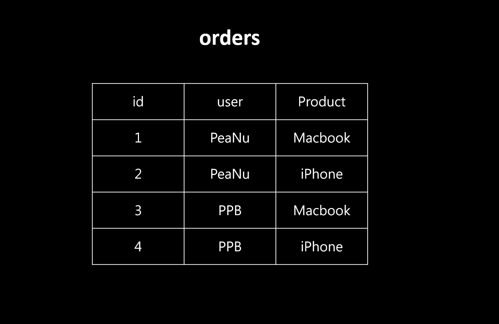
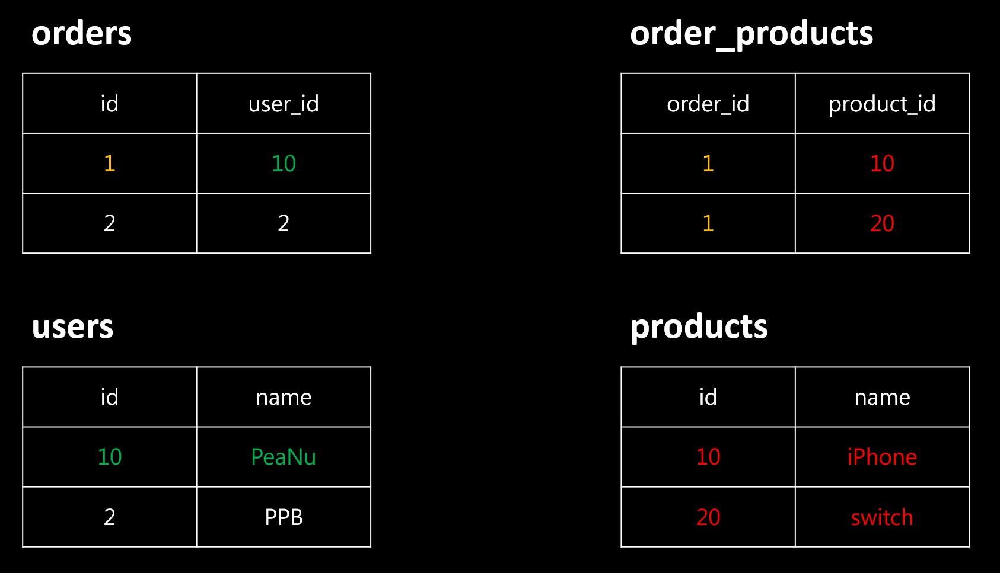

再複習一次。
簡述
正規化這個東西其實可以分很多階級，像是：
- 第一正規化
- 第二正規化
- 第三正規化
- …
簡單來說就是「做越多次，拆的越細」的意思，大部分只會做到第三正規化，最多可以到第五正規化（以我查到的資料來說啦）。
不過這裡沒有想談那麼細，我只希望訴你明白「正規化」實際是在做什麼就好了。如果真的想知道細節請參考這篇文章：Day 32 資料庫正規化(一~三)
在正規化以前
假設你有一個訂單的 table，最直覺的設計應該會成這樣：

看起來還蠻合理的，不過你仔細想想會發現有一些問題：
1. 沒有重點
用比較專業一點的術語來說是「沒有主鍵（Primary Key）」，但我覺得想成是沒有重點就好。
不過這是什麼意思？
舉例來說，如果拿 1 | PeaNu | Macbook 這一欄來看，你有沒有辦法在「只看一格的情況下」就知道它想表達什麼？
沒有辦法，你只看 1 看不懂，只看 PeaNu 也看不懂，只看 Mackbook 也一樣。只有把三個合起來一起看，你才知道「哦，這是編號 1 的訂單，有個叫 PeaNu 的人買了 Macbook」。
所以呢，這個就叫沒有重點（Primary Key）。
2. 很難維護
想想看，如果哪天 PeaNu 突然想改名為 PePe，那就得把原本是 PeaNu 的地方全部改掉，有幾個就要改幾次。或是 PeaNu 買了 100 個產品，就得依照欄位輸入：訂單編號 | PeaNU | 產品名稱，輸入 100 次。
以上問題在資料量很小的時候，影響不大，所以不做正規化也沒關係。可是資料量大的時候沒做正規化，那就真的麻煩大了。
正規化以後
基本上，正規化的概念可以想成是「把 table 獨立成另一個 table」。
來看一下剛剛的例子正規化後會長什麼樣：

現在把 table 拆成四個，分別是：
- orders，裡面儲存
id和user_id，代表「訂單編號」和「買家編號」 - orders_products，裡面儲存
order_id和product_id，代表「訂單編號」和「產品編號」 - users，裡面儲存
id和name，代表「買家編號」和「買家名稱」 - products，裡面儲存
id和name，代表「產品編號」和「產品名稱」
經過正規化以後，能解決上面提到的問題：
1. 重點性
雖然沒辦法只看一個欄位就知道在幹什麼？但至少你單看 orders 就可以知道裡面有 2 個訂單，或看 order_products 可以知道訂單 1 買了那些產品，以此類推。
總之呢，每個 table 裡都有一個「比較關鍵」的值（在這邊是 id），而不是像剛剛全部都混在一起。
2. 可維護性
如果現在要改 PeaNu 的名字，只需要改 users 裡的 PeaNu 就好，因為 orders 裡的 user_id 不會變，或是 PeaNu 買了很多個產品，那也只要到 order_products 裡面新增 order_id = 1 和 product_id = 產品編號 就好。
以上就是正規化的用途，還有為什麼要正規化。雖然講的沒有很好，但應該至少會有一點概念吧～